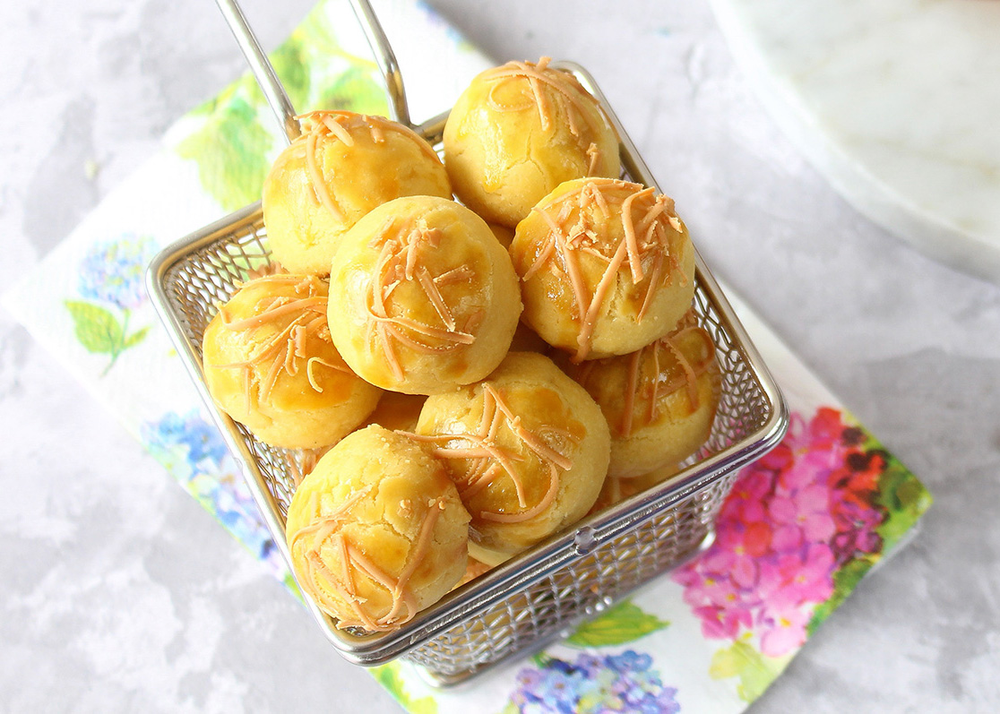

Resep kue kering Nastar

Bahan-Bahan:
- 300 gr unsalted butter (boleh pake campuran margarine tapi banyakin butternya)
- 6 SDM gula pasir, supaya cepat larut cari yang kristalnya kecil2, saya grinder sekali
- 2 butir kuning telur
- 1/2 SDT ekstrak vanilla
- 1/4 SDT garam halus
- 4 SDM susu bubuk fullcream
- 4 SDM maizena
- 400 gr terigu protein rendah
Isian ;
- Selai nanas homade dari 2 buah nanas prabumulih
Olesan :
- 3 butir kuning telur
- 3 SDM minyak goreng
- 2 SDM madu
- Secukupnya keju parut (optional)
Langkah-Langkah:
- Langkah 1 :
- Kocok rata gula dan butter. Tambahkan kuning telur, beri sedikit ekstrak vanilla dan sejumput garam
- Langkah 2 :
- Setelah rata masukan tepung, kali ini tepung, susu bubuk dan maizena sudah dicampur dan diayak. Aduk rata, saya campur terigu bertahap ya, 3 kali.
- Langkah 3 :
- Jika adonan sudah tercampur rata dan sudah bisa dibentuk, simpan sebentar di chiller kulkas sekitar 20-30 menit
- Langkah 4:
- Siap dibentuk. Supaya rata dan sama ukurannya, saya timbang per bulatan @ 10 gram. Rounding adonan, lubangi dengan jari kelingking, pipihkan tepinya jadi mulutnya gak lebar banget. Isikan dengan selai yang sudah dibulatkan, @ 5 gram. Tutup selai, bulatkan lagi. Lakukan sampai semua adonan habis. Susun di nampan yang udah diolesi margarine
- Langkah 5 :
- Panggang di oven yang sudah dipanaskan sebelumnya. Suhu sekitar 170 dercel selama 20 menit sampai 3/4 matang sekitar 20 menit dengan api atas bawah
- Langkah 6 :
- Setelah 3/4 matang keluarkan dari oven, agak dinginkan. Olesi dengan campuran kuning telur, minyak goreng dan madu. Mengolesinya harus rata dan nutup semua dengan olesan. Boleh olesi 2 kali. Lakukan sampai selesai. Saya taburi parutan keju
- Langkah 7 :
- Panggang lagi dengan api atas sekitar 10 menit.
- Langkah 8 :
- Jika sudah matang dan warna keju parutnya sudah kecoklatan angkat dan dinginkan.